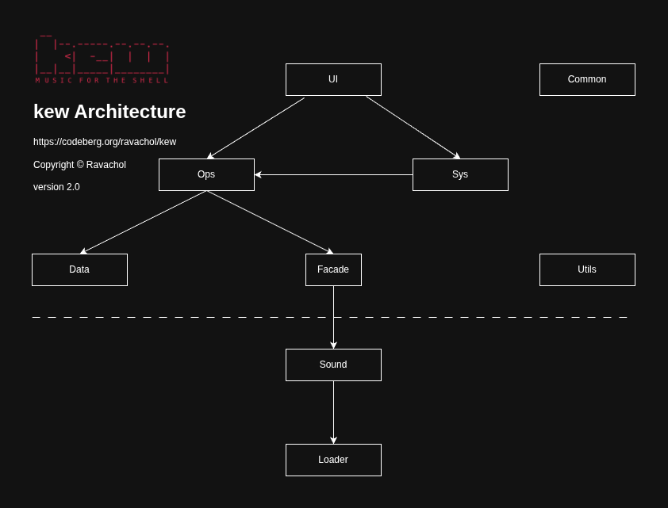

Welcome to the contributing guide
Thank you for your interest in contributing to kew! This page consists of two sections, how to contribute, and further down, how to develop for kew.
Goal of the project
The goal of kew is to provide a quick and easy way for people to listen to music with the absolute minimum of inconvenience. It’s a small app, limited in scope and it shouldn’t be everything to all people. It should continue to be a very light weight app.
For instance, it’s not imagined as a software for dj’ing or as a busy music file manager with all the features.
We want to keep the codebase easy to manage and free of bloat, so might reject a feature out of that reason only.
Bugs
Please report any bugs directly on codeberg, with as much relevant detail as possible. If there’s a crash or stability issue, the audio file details are interesting, but also the details of the previous and next file on the playlist. You can extract these details by running: ffprobe -i AUDIO FILE -showstreams -selectstreams a:0 -v quiet -print_format json
Create a pull request
After making any changes, open a pull request on Codeberg, develop branch.
https://codeberg.org/ravachol/kew
Please contact me (kew-player@proton.me) before doing a big change, or risk the whole thing getting rejected.
Try to keep commits fairly small so that they are easy to review.
If you’re fixing a particular bug in the issue list, please explicitly say “Fixes #” in your description”.
Issue assignment
We don’t have a process for assigning issues to contributors. Please feel free to jump into any issues in this repo that you are able to help with. Our intention is to encourage anyone to help without feeling burdened by an assigned task. Life can sometimes get in the way, and we don’t want to leave contributors feeling obligated to complete issues when they may have limited time or unexpected commitments.
We also recognize that not having a process could lead to competing or duplicate PRs. There’s no perfect solution here. We encourage you to communicate early and often on an Issue to indicate that you’re actively working on it. If you see that an Issue already has a PR, try working with that author instead of drafting your own.
Developers
Getting started
This document will help you setup your development environment. It is intended to be beginner friendly as we welcome and encourage people who are just starting to learn about programming in C to contribute to this project. We also welcome senior developers of course, but much of this document will be redundant if you are experienced.
Problems
If you run into any problems just ask for help in an email to kew-player@protonmail.com or in the PR itself.
Prerequisites
Before contributing, ensure you have the following tools installed on your development machine:
- GCC (or another compatible C/C++ compiler)
- Make
- Git
- Valgrind (optional, for memory debugging and profiling)
- VSCodium or VSCode (or other debugger)
Building the Project
Clone the repository:
git clone https://codeberg.org/ravachol/kew.git --single-branch --branch develop cd kewTo enable debugging symbols, run make with DEBUG=1
Build the project:
make DEBUG=1 -j$(nproc) # Use all available processor cores for faster builds
Commenting
Please refrain from using a lot of comments, and make sure that they are in English. I am not a big believer in comments and avoid commenting as much as possible. If you feel you need to add a comment, please first consider if you can make the function or variable names clearer, or if you can structure the code differently so that it is simpler and the intent is clear, or if you can make the code block into a function with a name that explains crystally clear what is going on. If you used AI make sure to remove comments that aren’t strictly needed.
Architecture

kew follows the above architecture, so that function calls only go in the direction of the arrows. For instance, functions in ops module never call functions in ui module as there is no arrow pointing from ops to ui. Please make sure your PR follows this architecture, and place your code in the correct module. If you have doubts in where to place it, just ask.
Debugging with VSCodium
Install extension clangd, C/C++ Debug (gdb) and EditorConfig.
Install the program bear that can generate a compile_commands.json. This helps clangd find libs.
Run bear – make.
This should enable you to develop kew on VSCodium.
Debugging with Visual Studio Code
To enable debugging in VSCode, you’ll need to create a launch.json file that configures the debugger. Follow these steps:
Open your project’s folder in VSCode.
Press
F5or go to the “Run and Debug” sidebar (Ctrl+Shift+Don Windows/Linux,Cmd+Shift+Don macOS), then click on the gear icon to create a new launch configuration file.Select “C++ (GDB/LLDB)” as the debugger type, and choose your platform (e.g., x64-linux, x86-win32, etc.).
Replace the contents of the generated
launch.jsonfile with the following, adjusting paths and arguments as needed:{ "version": "0.2.0", "configurations": [ { "name": "kew", "type": "cppdbg", "request": "launch", "program": "/kew", //"args": ["artist or song name"], "stopAtEntry": false, "cwd": "", "environment": [], "externalConsole": true, "MIMode": "gdb", "setupCommands": [ { "description": "Enable pretty-printing for gdb", "text": "-enable-pretty-printing", "ignoreFailures": true } ] } ] }Save the
launch.jsonfile.Create a ccppproperties.json file in the same folder (.vscode) with the following contents adjusting paths and arguments as needed:
{ "configurations": [ { "name": "linux-gcc-x64", "includePath": [ "/include/miniaudio", "/include/nestegg", "/**", "/usr/include", "/usr/include/opus", "/usr/include/vorbis", "/usr/include/chafa/", "/lib/chafa/include", "/usr/include/glib-2.0", "/usr/lib/glib-2.0/include", "/usr/include/libmount", "/usr/include/blkid", "/usr/include/sysprof-6", "/usr/include/glib-2.0/gio", "/usr/include/glib-2.0", "/include" ], "browse": { "path": [ "/include/miniaudio", "/src", "/include", "/**" ], "limitSymbolsToIncludedHeaders": true }, "defines": [ "_POSIX_C_SOURCE=200809L" ], "compilerPath": "/usr/bin/gcc", "cStandard": "", "cppStandard": "", "intelliSenseMode": "linux-gcc-x64" } ], "version": 4 }Add the extensions C/C++, C/C++ Extension pack, C/C++ Themes (optional).
Now you can use VSCode’s debugger to step through your code, inspect variables, and analyze any issues:
* Set breakpoints in your source code by placing your cursor on the desired line number, then press `F9`. * Press `F5` or click on the "Start Debugging" button (or go to the "Run and Debug" sidebar) to start the debugger. * When the execution reaches a breakpoint, VSCode will pause, allowing you to use its built-in features for debugging.
Finding where libs are located
If the paths in ccppproperties.json are wrong for your OS, to find the folder where for instance Chafa library is installed, you can use one of the following methods:
Using
pkg-config:The
pkg-configtool is a helper tool used to determine compiler flags and linker flags for libraries. You can use it to find the location of Chafa’s include directory. Open your terminal and run the following command:pkg-config --cflags chafaThis should display the
-Iflags required to include Chafa’s headers, which in turn will reveal the installation prefix (e.g.,/usr/include/chafa/). The folder containing the library files itself is typically located underliborlib64, so you can find it by looking for a folder namedchafawithin those directories.Using
brew(for macOS):If you installed Chafa using Homebrew, you can find its installation prefix with the following command:
brew --prefix chafaThis will display the installation prefix for Chafa (e.g.,
/usr/local/opt/chafa).Manually searching:
Alternatively, you can search your file system manually for the
chafafolder or library files. On Unix-based systems like Linux and macOS, libraries are typically installed under/usr,/usr/local, or within the user’s home directory (e.g.,~/.local). You can use thefindcommand to search for the folder:find /usr /usr/local ~/.local -name chafaThis should display the location of the Chafa installation, revealing both the include and library folders.
Valgrind
To use Valgrind for memory debugging and profiling:
Build kew with debug symbols. Run this command: make DEBUG=1 -j4
Run Valgrind on your binary:
valgrind --leak-check=full --track-origins=yes --show-leak-kinds=all --log-file=valgrind-out.txt --show-reachable=no -s ./kew
Editorconfig
- If you can, use EditorConfig for VS Code Extension. There is a file with settings for it: .editorconfig.
Building an RPM package
For RPM-based distributions (like Fedora, CentOS, RHEL), you can build the package from source using the provided .spec file.
Install Build Tools & Dependencies
First, install the necessary build dependencies for
kewby following the instructions for your distribution (e.g., Fedora) in the “Building the project manually” section.Then, install the RPM build tools:
bash sudo dnf install rpm-buildPrepare Source Tarball
Create the source tarball from the git repository and place it where
rpmbuildcan find it: ```bashDefine the version based on the spec file
VERSION=$(grep ‘Version:’ kew.spec | awk ‘{print $2}’)
Create the rpmbuild directory structure
mkdir -p ~/rpmbuild/SOURCES
Create the source tarball
git archive –format=tar.gz –prefix=kew-$VERSION/ -o ~/rpmbuild/SOURCES/kew-$VERSION.tar.gz HEAD ```
Build the RPM
Now, you can build the binary and source RPMs:
bash rpmbuild -ba kew.specThe resulting RPM files will be created in the~/rpmbuild/RPMS/and~/rpmbuild/SRPMS/directories.